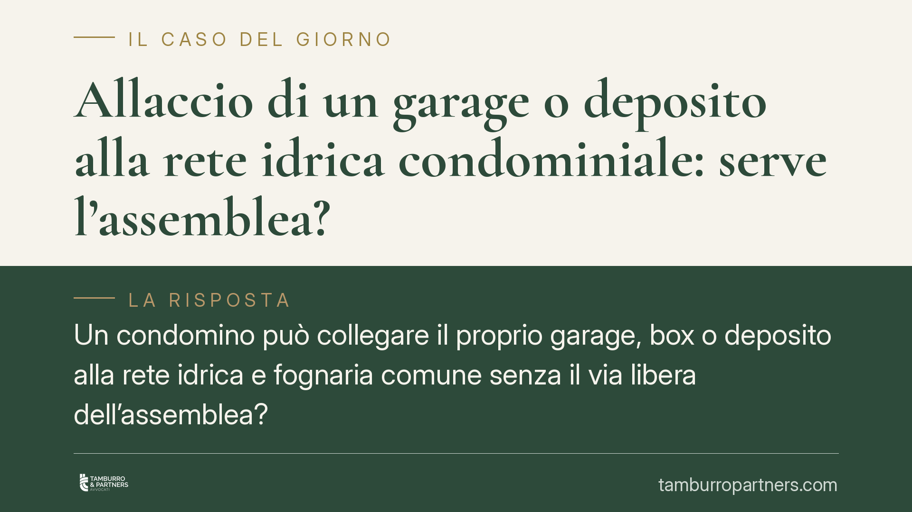

Allaccio di un garage o deposito alla rete idrica condominiale: serve l'assemblea?
Un condomino può collegare il proprio garage, box o deposito alla rete idrica e fognaria comune senza il via libera dell'assemblea? Una pronuncia di merito del Tribunale di Locri qualifica l'intervento come uso più intenso della cosa comune, non come innovazione. La distinzione pesa sui poteri del condominio e sui limiti del regolamento. Vediamo cosa cambia in concreto.

Il caso
Una condomina collega un locale accatastato come deposito (categoria C2) alla rete idrica e fognaria del condominio. Il condominio contesta l'intervento, sostenendo la necessità di una preventiva autorizzazione assembleare. Il Tribunale di Locri, con pronuncia di merito del 2025 (estremi da verificare presso la cancelleria), ha escluso tale necessità, inquadrando l'allaccio come esercizio del diritto di uso della cosa comune.
Si tratta di una decisione di un giudice di primo grado: non vincolante per altri casi, ma utile per leggere correttamente due norme spesso confuse.
Inquadramento normativo
Il nodo è la distinzione tra due articoli del Codice civile.
L'art. 1102 c.c. consente a ciascun condomino di servirsi della cosa comune, anche in modo più intenso rispetto agli altri, a due condizioni: non alterarne la destinazione e non impedire agli altri partecipanti un pari uso. Un allaccio alla rete idrica o fognaria rientra tipicamente in questa categoria: sfrutta più intensamente un impianto che è già destinato a servire le unità dell'edificio.
L'art. 1120 c.c. riguarda invece le innovazioni, cioè le modifiche che alterano la destinazione o la consistenza della cosa comune. Queste sì richiedono una delibera assembleare con le maggioranze qualificate previste dalla norma.
La differenza è sostanziale. Se l'intervento è uso ex art. 1102 c.c., il singolo condomino può eseguirlo autonomamente, a proprie spese e sotto la propria responsabilità, senza chiedere il permesso all'assemblea. Se è innovazione ex art. 1120 c.c., serve la delibera.
Il regolamento condominiale e le clausole derogatorie
Il condominio può opporre una clausola del regolamento che vieta o limita questo tipo di allacci? In astratto sì, ma a condizioni precise.
Le clausole che comprimono i diritti dei singoli condomini sulle parti comuni devono avere natura contrattuale (cioè essere accettate da tutti o trascritte) e vanno interpretate in senso restrittivo. È un principio consolidato in giurisprudenza di legittimità: una limitazione ai poteri del condomino non si presume e non può essere estesa oltre il suo tenore letterale.
Tradotto: un divieto generico non basta a bloccare un allaccio se non è formulato in modo chiaro e specifico. In caso di dubbio, prevale il diritto del condomino all'uso della cosa comune.
Implicazioni pratiche
Per il proprietario di un box o deposito, la lettura è duplice.
Da un lato, il diritto all'allaccio sussiste quando l'intervento rispetta i limiti dell'art. 1102 c.c.: non danneggia l'impianto, non ne altera la destinazione, non pregiudica l'uso degli altri. Non occorre chiedere autorizzazione.
Dall'altro, resta aperto il tema della ripartizione dei costi. Il diritto ad allacciarsi non significa consumare a spese del condominio. Chi utilizza l'impianto deve farsi carico dei propri consumi, di norma tramite un contatore dedicato, e delle spese di manutenzione proporzionate all'uso. Diritto all'allaccio e regime delle spese vanno tenuti distinti.
Cosa fare in concreto
- Verificare il regolamento condominiale: controllare se esiste una clausola specifica sugli allacci agli impianti comuni e accertarne la natura (contrattuale o assembleare).
- Documentare l'intervento tecnico: predisporre e conservare la relazione di un tecnico che attesti il rispetto dei limiti dell'art. 1102 c.c. (nessun danno all'impianto, nessuna alterazione della destinazione).
- Installare un contatore dedicato: separare i propri consumi per evitare contestazioni sulla ripartizione delle spese.
- Comunicare l'intervento all'amministratore: pur non essendo richiesta l'autorizzazione, una comunicazione scritta previene contenziosi e dimostra correttezza.
- Nei casi di incertezza o di impatto rilevante sugli impianti è opportuna una valutazione preventiva della documentazione tecnica e regolamentare.
Un principio da non generalizzare
La pronuncia di Locri è una decisione di merito, legata al caso concreto e non vincolante per situazioni diverse. Ogni allaccio va valutato in rapporto allo stato degli impianti, alla destinazione del locale e al testo del regolamento. La regola generale resta quella dell'art. 1102 c.c., ma la sua applicazione non è automatica: dipende dai fatti.
Contributo informativo a cura di Tamburro & Partners Avvocati – Avv. Giuseppe Tamburro. Non costituisce parere legale.
Ogni condominio ha una storia a sé.
Se gestisci un'amministrazione e vuoi un confronto su una specifica questione condominiale, scrivi allo studio. Ti rispondiamo entro un giorno lavorativo.